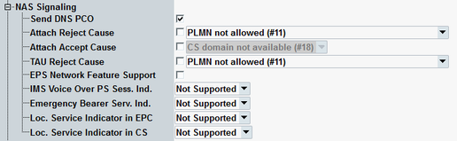

The parameters in this section configure settings related to NAS signaling messages, to be sent to the UE.

Enables or disables sending of a DNS IP address to the UE.
Remote command:If the checkbox is enabled, the application rejects attach requests from the UE. The reject message contains the selected reject cause.
The rejection causes are defined in 3GPP TS 24.301, section 9.9.3.9. The purpose of rejecting UE requests is to test the reaction of the UE: Does it repeat the request at all and if so, in which time intervals?
Option R&S CMW-KS510 is required.
Remote command:Selects whether the displayed cause is added to ATTACH ACCEPT messages or not.
Remote command:If the checkbox is enabled, the application rejects tracking area update (TAU) requests from the UE. The reject message contains the selected reject cause.
Option R&S CMW-KS510 is required.
Remote command:Enables or disables sending of the information element "EPS Network Feature Support" to the UE in the "attach accept" message.
The information element indicates the support of specific features by the network (see 3GPP TS 24.301, section 9.9.3.12A). The individual feature flags are configured via the following parameters.
Remote command:Configures the first bit of the information element "EPS Network Feature Support".
The flag indicates whether voice over LTE (VoLTE) is supported, or a circuit-switched fallback (CSFB) is required for voice calls.
Remote command:Configures the second bit of the information element "EPS Network Feature Support".
The flag indicates whether emergency bearer services are supported. Such bearers have a higher priority than ordinary bearers.
Option R&S CMW-KS510 is required.
Remote command:Configures the third bit of the information element "EPS Network Feature Support".
The flag indicates whether location services are supported by the LTE network (evolved packet core network).
Option R&S CMW-KS510 is required.
Remote command:Configures the fourth and fifth bit of the information element "EPS Network Feature Support".
The flag indicates whether location services are supported by the CS domain or not or no information is available.
Option R&S CMW-KS510 is required.
Remote command: